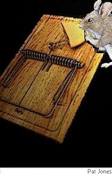

An unexpected death that doesn’t hurt —
cheers! — make mine a quiet heart attack,
cessation of a vital artery’s spurt,
no time to think or fear, no time to blurt
those final banal words, no glancing back;
a gentle bow to boozers in “The Star”,
their chatter dies, a rapid fade to black,
cheerio! — a glass left standing on the bar.
I lie in bed at night and think of mousetraps
waiting out there, baited, primed — perhaps
they’re cruel but I’ve tried every-bloody-thing
except this final lousy mousy sting.
I used to lay the traps without a thought,
content to load and set the things, but caught
by troubled conscience, now dislike their sense
of sneakiness, efficiency and patience.
And I’ve joined hands with Death to trap those paws,
a craven partnership and all because
the night before I’d sat and watched TV
and spotted two black shining eyes on me.
And as I doze I wonder if I could
hear the clap of strong spring on cheap wood?
Then understand a fruitful catch will blood
the trap less with a snap, more of a thud.
Oh Lord, let my demise be just as quick
as Mousey’s: lunch at Pagglio’s, the pick
of favourite food and wine with friends who please,
then darkness as I reach out for the cheese.